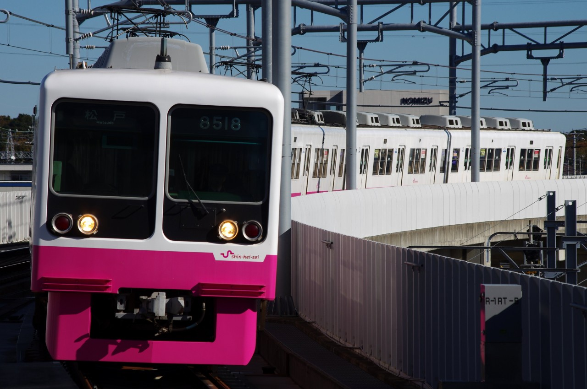
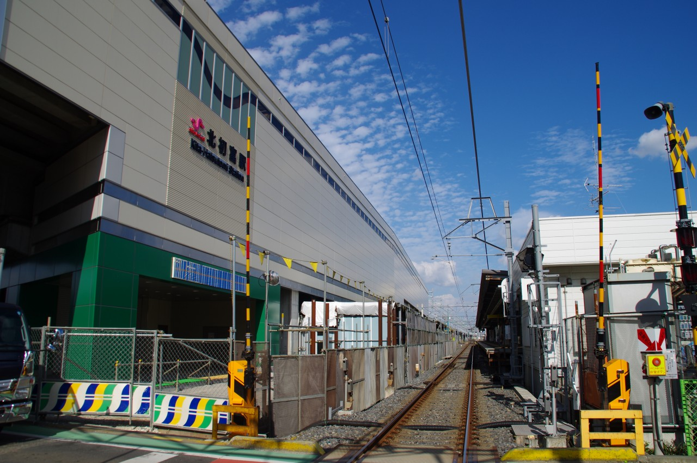

新京成線 くぬぎ山～鎌ヶ谷大仏 高架化工事記録
新京成線くぬぎ山～鎌ヶ谷大仏間では連続立体交差事業により路線の高架化が行われた。この区間は鎌ケ谷市の中心付近にあたり、特に新鎌ヶ谷界隈は発展が目覚ましい地域である。 工事は地上線を南側に敷設した仮線に切替えた上で行われた。 2017/10/21に下り線が高架化、2019/11/30の深夜に行われる上り線の線路切換工事をもって上下線が高架化が完了した。


駅名標。(2019/12/03)


イオンモールの屋上より駅を眺める。北総鉄道と並んで高架駅が設置された。(2019/11/17)
新鎌ヶ谷駅

こちらも島式ホーム1面2線の高架駅である。(2019/12/03)

階段には番線の案内が記されている。(2019/12/03)

入線する上り列車。新京成の列車を高架線のカーブで撮影できるのは面白い。(2019/12/03)
北初富付近

仮駅は旧ホームの東側に設置された。(2015/09/06)

北側には高架駅となる新駅が建設中。(2015/09/06)

下り線線路切替後。新駅舎も形になっていた。(2019/09/20)

上り仮線ホームと仮駅舎。(2019/09/20)

枕木が斜めに設置されている箇所がある。(2019/12/03)

高架を登るN800形。(2019/12/03)
くぬぎ山～北初富

上り仮線が右へと分岐している。旧線ではカーブの先に北初富駅のホームがあったのだが、完全に姿を変えてしまった。(2019/11/17)

上り仮線を走る8000形を撮影。(2019/11/17)

上り線の線路切替後。(2019/12/03)